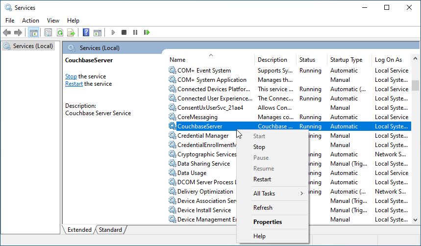
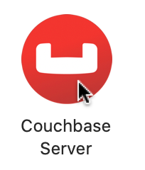
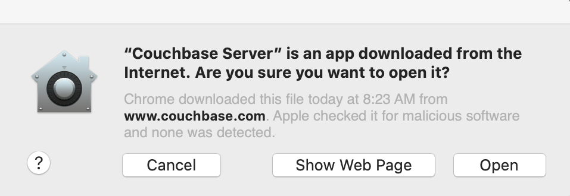
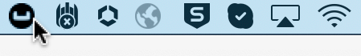
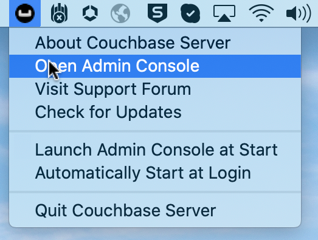

Start and Stop Couchbase Server
Start and stop the Couchbase Server service and application.
This page provides instructions for starting and stopping a standard, package-based installation of Couchbase Server. Instructions for starting and stopping a non-root installed Couchbase Server are provided on the page for Non-Root Install and Upgrade, in the section Start, Stop, and Get Status.
Linux
On Linux, Couchbase Server is installed as a standalone application with support for running as a background (daemon) process during startup. The startup script is automatically installed when you use any of the packaged releases of Couchbase Server for Linux. By default, Couchbase Server is configured to start automatically at run levels 2, 3, 4, and 5, and explicitly shut down at run levels 0, 1, and 6.
sudo systemctl start couchbase-serversudo systemctl stop couchbase-serverLegacy Linux
The instructions in the previous section are meant to be used on modern versions of Linux that use systemd for init processing.
For versions of Linux that use SysV for init processing, you need to use the service command for starting and stopping Couchbase Server.
sudo service couchbase-server startsudo service couchbase-server stopWindows
On Windows, Couchbase Server is installed as a Windows service. By default, the Couchbase Server service automatically starts when the system boots.
You can manage the service using the Windows Services app, the net command, or with Couchbase-supplied batch scripts.
You need to be logged into a user account that has administrator privileges, or one that has separately granted rights to manage the Couchbase Server service.
-
Open the Services app.
You can search for
services.mscin Windows to find the app quickly. -
Find CouchbaseServer in the list of services and right-click on it.
You can start and stop the service from this menu, or select menu:[Properties] to configure how the service runs, such as whether it starts at system boot.
If CouchbaseServer isn’t in the list, then you should attempt to start the service using the batch script method below.
net Commandnet start CouchbaseServer
net stop CouchbaseServer
-
In File Explorer, go to
C:\Program Files\Couchbase\Server\bin\install\.The scripts are named something similar to
cb_winsvc_start_<version>.bat. -
Right-click on the script that you want to use and select menu:[Run as administrator].
A User Account Control prompt may ask for your permission to run Windows Command Processor. Click Yes.
A terminal window will open and display the Couchbase Server startup and shutdown progress. The window will automatically close if the process is successful.
macOS
On macOS, Couchbase Server is installed as a standard application that resides in the system Applications folder. Starting and stopping Couchbase Server is controlled by launching and quitting the application.
Note that if this is the first time the current version of Couchbase Server has been started, but a prior version of Couchbase Server has been previously run, old Couchbase-Server-specific files from ~/Library/Application Support must be deleted, to allow the new version of the server to start.
For information, see the macOS section of Uninstall Couchbase Server.
-
Go to the Applications folder and double-click on the Couchbase Server icon:
If this is the first time the current version of Couchbase Server has been started, a notification such as the following is displayed:
To confirm start of Couchbase Server, left-click on the Open button.
-
Go to the MacOS menu bar, at the upper right of the screen, and locate the Couchbase Server control icon, which is now displayed:
 -
Left-click on the control icon, to display the pull-down menu; and then left-click on the Open Admin Console menu-item:
Couchbase Web Console now starts.
Note that the menu contains an item named Launch Admin Console at Start. If this is selected instead of Open Admin Console, Couchbase Web Console starts; and will in future start automatically, whenever Couchbase Server itself is started — without Open Admin Console needing to be left-clicked on.
Go to the MacOS menu bar, locate the Couchbase Server control icon, display the pull-down menu, and select Quit Couchbase Server. The menu bar icon will disappear when Couchbase Server shuts down.
open -a Couchbase\ Serverosascript -e 'quit app "Couchbase Server"'You may receive the following error: 0:27: execution error: Couchbase Server got an error: User canceled. (-128).
You can ignore this error.